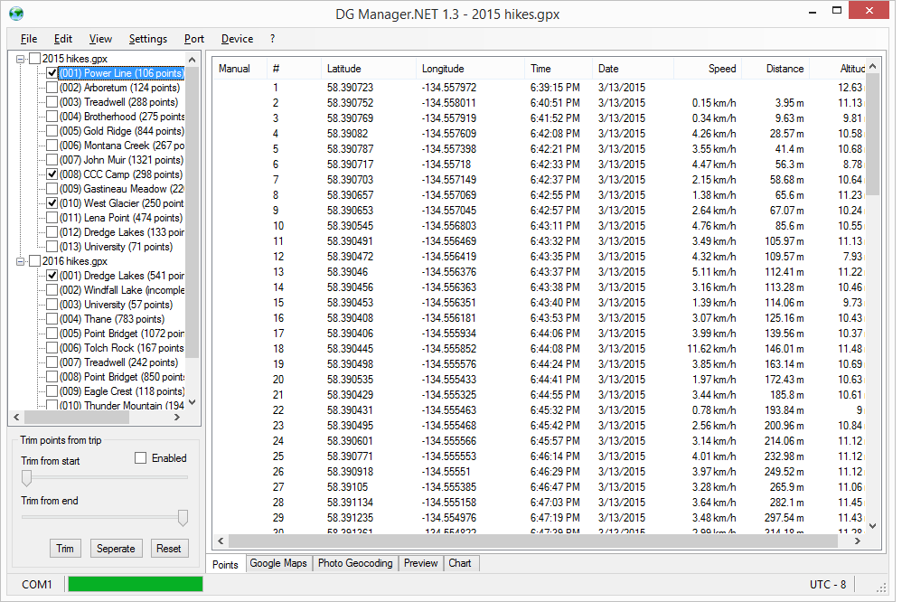

Documentation
Tracks View
The track view displays the tracks that have been loaded. If smart track generation is enabled this will be a flat list of the generated tracks otherwise the tracks will be grouped by the file they loaded from. Selecting a track will populate the points tab and enable the trim controls to hide points from the beginning and end of the track. Checking tracks will display them in the map.
The context menu has options to remove the selected track and to reduce the number of points in the track. If a track is really large, the reduce option will try to remove the least significant points until the target size is reached.
Trim Controls
The trim controls will hide points from the beginning and/or end of the selected track from displaying on the map and from being saved to new files. The Trim button will fully remove the trimmed points from the track. The Seperate button will split the track at the trim points resulting in one or two new tracks that include the trimmed points. The Reset button will reset the trim points so that no points are trimmed.
Points Tab

The points tab lists all points in the currently selected track. Individual points can be deleted and the trim points can be set with the right-click menu. Speed and distance values are calculated from the previous point.
Map Tab
The map tab displays all tracks that are checked. Any trimmed points will not be included.
Geocoding Tab
This tab allows you to include photos, set a time offset and view them on the map before updating the files.
Preview Tab
This tab renders the tracks just like the map tab but without the map. This has been useful for quick feedback from adjusting trim values without constantly refreshing the map. This tab may be removed once map tab has been transitioned to a new browser control that can be updated without refreshing the page.
Chart Tab

This tab is a work in progress. It currently displays a chart of altitude vs distance, but it will eventually have various other options.
Console
There is a console view at the bottom that displays various messages including errors. This can be hidden under the View menu.